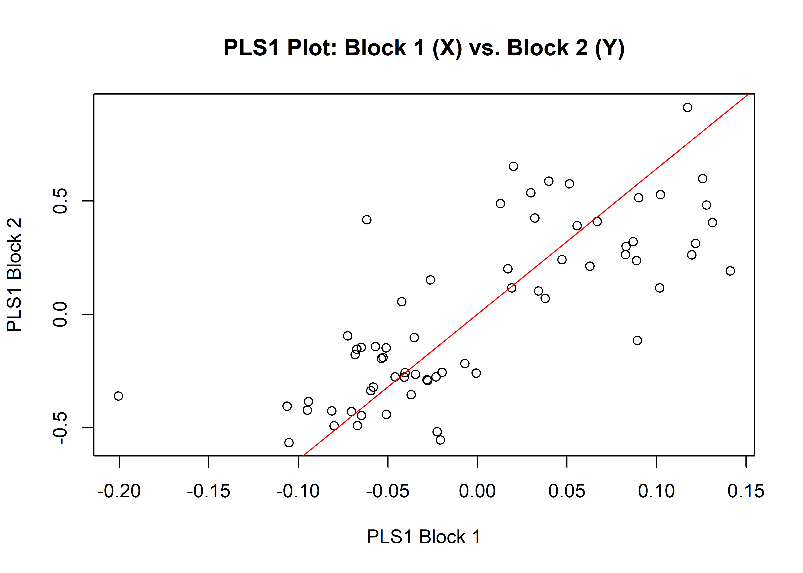
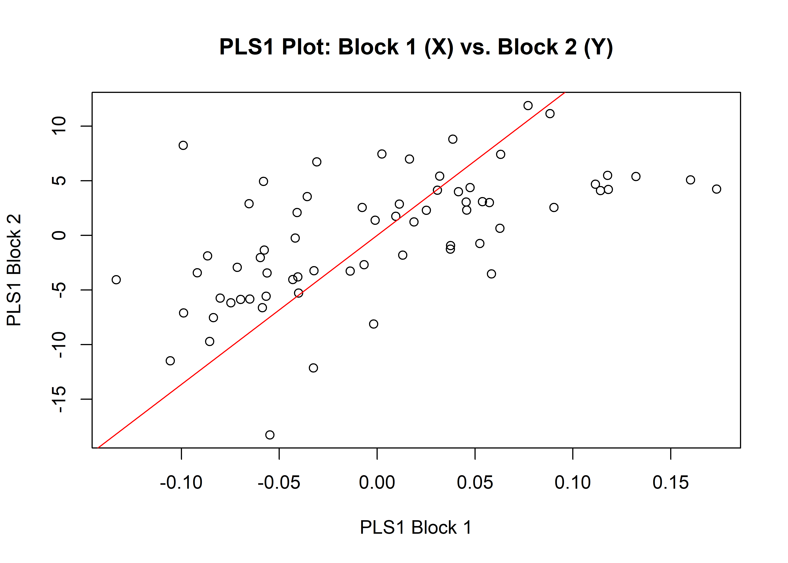

Chapter 4 GM v Linear
4.1 Load packages + data
# download most recent software version
#devtools::install_github("geomorphR/geomorph", ref = "Stable", build_vignettes = TRUE)
#devtools::install_github("mlcollyer/RRPP")
# load analysis packages
library(here)
library(StereoMorph)
library(geomorph)
library(ggplot2)
library(dplyr)
library(wesanderson)
# read shape data and define number of sLMs
shapes <- readShapes("shapes")
shapesGM <- readland.shapes(shapes,
nCurvePts = c(10,3,5,5,3,10))
# read qualitative data
qdata <- read.csv("qdata.morph.csv",
header = TRUE,
row.names = 1)4.2 Generalised Procrustes Analysis
# gpa
Y.gpa <- gpagen(shapesGM, print.progress = FALSE)
## plot
plot(Y.gpa)
# dataframe
gdf <- geomorph.data.frame(shape = Y.gpa$coords,
size = Y.gpa$Csize)4.3 Shape vs linear data (shape vars)
# are shape and linear data correlated?
# subset linear data
linear <- qdata %>%
select(sh.maxbl, sh.maxw, sh.maxshw, sh.maxth, sh.maxstl, sh.maxstw)
# 2B-PLS
shape.meas.cor <- two.b.pls(A1 = Y.gpa$coords,
A2 = linear,
print.progress = FALSE,
iter = 9999)
summary(shape.meas.cor)##
## Call:
## two.b.pls(A1 = Y.gpa$coords, A2 = linear, iter = 9999, print.progress = FALSE)
##
##
##
## r-PLS: 0.7676
##
## Effect Size (Z): 5.3903
##
## P-value: 1e-04
##
## Based on 10000 random permutations## plot PLS
plot(shape.meas.cor)
4.4 Shape vs linear data (linear vars)
# are shape and linear data correlated?
# subset linear data
linear2 <- qdata %>%
select(maxl, maxw, maxth, maxstl, maxstw)
# 2B-PLS
shape.meas.cor <- two.b.pls(A1 = Y.gpa$coords,
A2 = linear2,
print.progress = FALSE,
iter = 9999)
summary(shape.meas.cor)##
## Call:
## two.b.pls(A1 = Y.gpa$coords, A2 = linear2, iter = 9999, print.progress = FALSE)
##
##
##
## r-PLS: 0.6022
##
## Effect Size (Z): 3.96754
##
## P-value: 1e-04
##
## Based on 10000 random permutations## plot PLS
plot(shape.meas.cor)